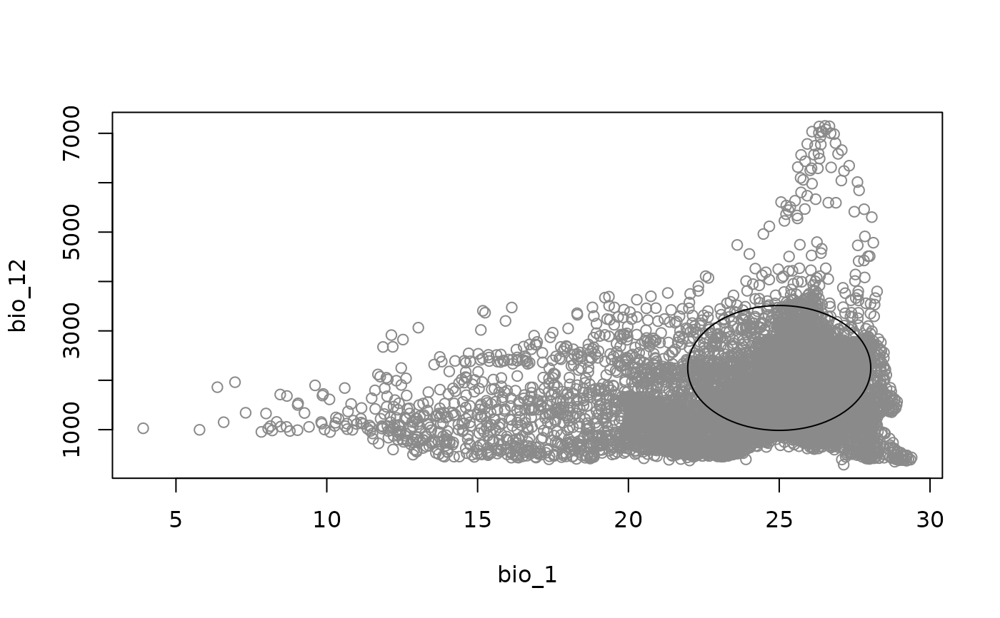
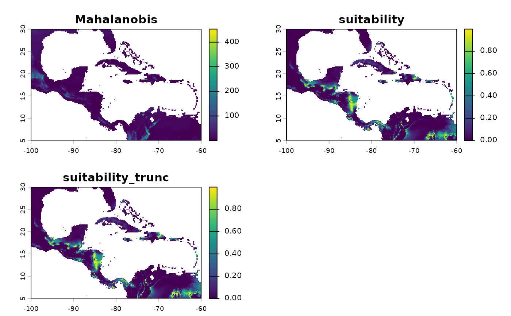
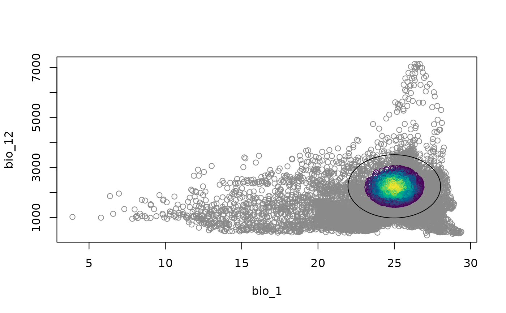

Computes Mahalanobis distance and suitability values deriving from a
nicheR_ellipsoid or nicheR_community object,
for newdata provided as a data.frame, matrix, or
SpatRaster.
Usage
# S3 method for class 'nicheR_ellipsoid'
predict(
object,
newdata,
adjust_truncation_level = NULL,
include_suitability = TRUE,
suitability_truncated = FALSE,
include_mahalanobis = TRUE,
mahalanobis_truncated = FALSE,
keep_data = NULL,
verbose = TRUE,
...
)
# S3 method for class 'nicheR_community'
predict(object, newdata, prediction = "Mahalanobis", verbose = TRUE, ...)Arguments
- object
An object of the classes
"nicheR_ellipsoid"or"nicheR_community".- newdata
Environmental predictors. One of:
A
SpatRaster(or legacyrasterclasses, coerced automatically).A
data.frameormatrixwith columns named to matchobject$var_names.
- adjust_truncation_level
Optional numeric confidence level in
(0, 1)to overrideobject$clwhen computing truncated outputs. Default isNULL(uses the level stored inobject).- include_suitability
Logical. If
TRUE(default), returns suitability values (\(\exp(-0.5 D^2)\)).- suitability_truncated
Logical. If
TRUE, returns a truncated suitability layer where values outside the chi-square contour are set to0. Default isFALSE.- include_mahalanobis
Logical. If
TRUE(default), returns Mahalanobis distance (\(D^2\)).- mahalanobis_truncated
Logical. If
TRUE, returns a truncated Mahalanobis layer where values outside the chi-square contour are set toNA. Default isFALSE.- keep_data
Logical or
NULL. IfTRUE, includes the original predictors in the output. Default isNULL:FALSEforSpatRasterinput,TRUEfor tabular input.- verbose
Logical. If
TRUE(default), prints progress messages.- ...
Additional arguments, not currently used.
- prediction
Character. The type of prediction to return. One of:
"Mahalanobis"(default),"suitability","Mahalanobis_trunc", or"suitability_trunc".
Value
For nicheR_ellipsoid objects, if newdata is a
SpatRaster, returns a SpatRaster with the requested
prediction as layers (and optionally the original predictor
layers if keep_data = TRUE). If newdata is tabular,
returns a data.frame with the requested predictions as columns
(by default returns the original predictors as columns).
For nicheR_community objects, if newdata is a
SpatRaster, returns a SpatRaster where each layer represents
predictions for each ellipse. If newdata is a data.frame,
returns a data.frame with the original data plus one prediction
column per ellipse.
Details
Suitability is computed as \(\exp(-0.5 D^2)\), where \(D^2\) is the
squared Mahalanobis distance from the niche centroid. Truncated outputs use
a chi-square cutoff based on the ellipsoid confidence level (cl).
For tabular inputs, coordinate columns (e.g., x, y,
lon, lat) are detected and retained when
keep_data = TRUE. Extra non-predictor columns are ignored.
Examples
range_df <- data.frame(bio_1 = c(22, 28),
bio_12 = c(1000, 3500))
ell <- build_ellipsoid(range = range_df)
#> Starting: building ellipsoidal niche from ranges...
#> Step: computing covariance matrix...
#> Step: computing additional ellipsoidal niche metrics...
#> Done: created ellipsoidal niche.
# \donttest{
ma_bios <- terra::rast(
system.file("extdata/ma_bios.tif", package = "nicheR"))
back_df <- as.data.frame(ma_bios, xy = TRUE)
# Default: Mahalanobis distance and suitability, data frame input
pred_df <- predict(ell,
newdata = back_df)
#> Starting: suitability prediction using newdata of class: data.frame...
#> Step: Identified spatial columns: x, y
#> Step: Ignoring extra predictor columns: bio_5, bio_6, bio_7, bio_13, bio_14, bio_15
#> Step: Using 2 predictor variables: bio_1, bio_12
#> Done: Prediction completed successfully. Returned columns: x, y, bio_1, bio_12, Mahalanobis, suitability
head(pred_df)
#> x y bio_1 bio_12 Mahalanobis suitability
#> 1 -99.91667 29.91667 18.16097 680 60.97017 5.760967e-14
#> 2 -99.75000 29.91667 18.06556 703 61.87130 3.671288e-14
#> 3 -99.58333 29.91667 17.95946 725 62.96484 2.124999e-14
#> 4 -99.41667 29.91667 18.01018 734 62.09557 3.281844e-14
#> 5 -99.25000 29.91667 18.14458 748 59.99133 9.398282e-14
#> 6 -99.08333 29.91667 18.36623 771 56.60656 5.105529e-13
# All four outputs at once
pred_all <- predict(ell,
newdata = back_df,
include_mahalanobis = TRUE,
include_suitability = TRUE,
mahalanobis_truncated = TRUE,
suitability_truncated = TRUE)
#> Starting: suitability prediction using newdata of class: data.frame...
#> Step: Identified spatial columns: x, y
#> Step: Ignoring extra predictor columns: bio_5, bio_6, bio_7, bio_13, bio_14, bio_15
#> Step: Using 2 predictor variables: bio_1, bio_12
#> Done: Prediction completed successfully. Returned columns: x, y, bio_1, bio_12, Mahalanobis, suitability, Mahalanobis_trunc, suitability_trunc
colnames(pred_all)
#> [1] "x" "y" "bio_1"
#> [4] "bio_12" "Mahalanobis" "suitability"
#> [7] "Mahalanobis_trunc" "suitability_trunc"
nicheR::plot_ellipsoid(object = ell, prediction = pred_all)

#' nicheR::plot_ellipsoid(object = ell, prediction = pred_all, col_layer = "suitability")
# Raster input: returns a SpatRaster
pred_rast <- predict(ell,
newdata = ma_bios[[ell$var_names]],
include_suitability = TRUE,
suitability_truncated = TRUE)
#> Starting: suitability prediction using newdata of class: SpatRaster...
#> Step: Using 2 predictor variables: bio_1, bio_12
#> Done: Prediction completed successfully. Returned raster layers: Mahalanobis, suitability, suitability_trunc
pred_rast
#> class : SpatRaster
#> size : 150, 240, 3 (nrow, ncol, nlyr)
#> resolution : 0.1666667, 0.1666667 (x, y)
#> extent : -100, -60, 5, 30 (xmin, xmax, ymin, ymax)
#> coord. ref. : lon/lat WGS 84 (EPSG:4326)
#> source(s) : memory
#> names : Mahalanobis, suitability, suitability_trunc
#> min values : 0.002385, 0, 0
#> max values : 453.252343, 0.998808, 0.998808
terra::plot(pred_rast)

# Adjust truncation level without refitting
pred_80 <- predict(ell,
newdata = back_df,
suitability_truncated = TRUE,
adjust_truncation_level = 0.80)
#> Starting: suitability prediction using newdata of class: data.frame...
#> Step: Identified spatial columns: x, y
#> Step: Ignoring extra predictor columns: bio_5, bio_6, bio_7, bio_13, bio_14, bio_15
#> Step: Using 2 predictor variables: bio_1, bio_12
#> Done: Prediction completed successfully. Returned columns: x, y, bio_1, bio_12, Mahalanobis, suitability, suitability_trunc
nicheR::plot_ellipsoid(object = ell, prediction = pred_80, col_layer = "suitability_trunc")

# }